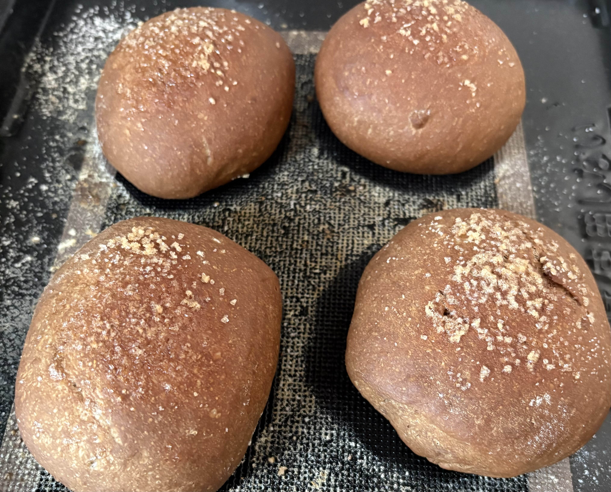

コーヒーロール
- 強力粉150g
- 砂糖大さじ１杯
- 塩少量
- ドライイースト1g
- コーヒーの粉スプーン3杯強
- 水60ml
- デーツコーヒー液50ml
- バター13g
(1)水とデーツコーヒー液を混ぜ、ぬるま湯にし、にイーストと砂糖を入れてよく混ぜる。
(2)１を、強力粉と塩に入れ、軽く混ぜた後、柔らかくしたバターを混ぜ込む。
(3)生地をひとまとめにし、たたきつけるようにして力を入れ、約１０分間、全体が均一に耳たぶくらいの柔らかさになるまで捏ねる。
(4)綺麗に丸めなおし、閉じ目を下にする。発酵を、温度は、３５℃。時間は、３５分で行う。
(5)生地を上から軽く押さえ、ガスを抜き、四方から折り込む。
(6)６等分に形成し、ラップをかけ、約２０分休ませる。
(7)お好みの量の砂糖を、生地の上にトッピング。塩はお好みで少量かけても美味しい。
(8)５と同様のことを行う。
(9)オーブンを、２１０℃、２段、予熱ありにする。
(10)霧吹きを掛けオーブンで、１５～２０分焼く。
(11)完成！
焼きたてすぐが生地も柔らかく美味しかった。上にのせた砂糖もしっかり味がしていたが、時間が経つと砂糖が溶けてあまり味がしなくなった。

目次
パン
6/28 大葉とベーコン
5/24 コーヒーロール
5/9 簡単手抜きパン
4/25 ベーコンエピ・マシュマロ・塩バター
4/19 塩パン・ジャムパン
4/12 プチパンに挑戦その２
4/11 プチパンに挑戦
4/4 惣菜&菓子パン
3/31 はじめてのパン
おまけ